Meteo Module¶
The METEO module was initially developed for simulations of meteotsnamis. It now includes subroutines for simulating the wind effects on waves, storm surges, landslide-generated tsunamis and processes related to atmospheric pressure effects.
- Wind effect on waves
Wind effects are modeled using the wind stress forcing proposed by Chen et al. (2004). The wind stress is expressed by

where  and
and  represent air density and water density, respectively,
represent air density and water density, respectively,  is wave celerity. The wind stress is only applied on wave crests. A free parameter representing a ratio of the forced crest height to maximum surface elevation is implemented in the model.
is wave celerity. The wind stress is only applied on wave crests. A free parameter representing a ratio of the forced crest height to maximum surface elevation is implemented in the model.
- Holland model
Holland model is an analytic model of wind and pressure profiles described based on Hurricanes. The pressure distribution can be expressed by
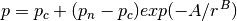
where  is the pressure at radius
is the pressure at radius  , and 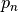 are the central pressure and the ambient pressure, respectively.
, and 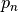 are the central pressure and the ambient pressure, respectively.  and
and  are scaling paramters from the model input. The velocity distribution can be described by
are scaling paramters from the model input. The velocity distribution can be described by
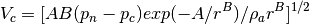
Based on the formulations above, it is easy to obtain the following storm parameters
The radius of maximum winds (RMW) is
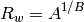
The maximum wind speed
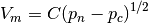
where

- Storm surge
To calculate storm surges, wind stress is applied
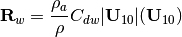
Note that is not used, compared to the formula for ‘Wind effect on waves’.
- Meteotsunami
Meteotsunami is modeled using a pressure source of two-dimensional Gausian distribution:
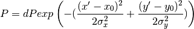
where 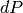 is the pressure anomaly in mb, 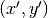 are the coordinates rotated to the pressure moving direction (angle is  as indicated in the figure). and 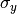 are paramters representing the length of the width of the pressure source.
as indicated in the figure). and 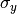 are paramters representing the length of the width of the pressure source.
{kind=link}
- Landslide-generated tsunami
Landslide-generated tsunami can be calculated using the same approach as the meteotsunami. Details will be reported by Woodruff (2017).